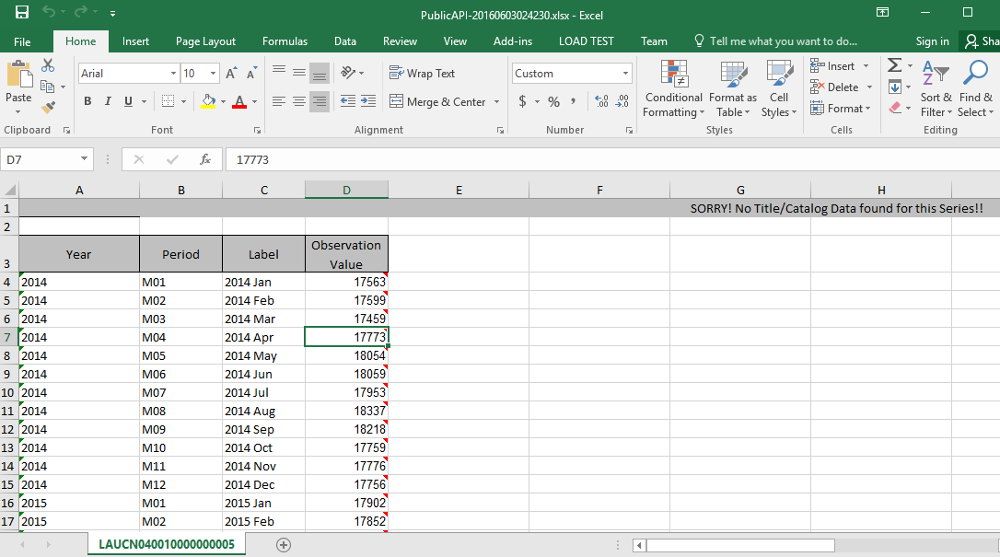

Responses from the BLS API can come in two forms: JSON objects and xlsx spreadsheets.
JSON responses will have the following form:
{"status":"REQUEST_SUCCEEDED",
"responseTime":32,
"message":["No Data Available for Series OEUN000000054192027402104 Year: 2013","No Data Available for Series OEUN000000054192027402104 Year: 2014"],
"Results":{
"series":
[{"seriesID":"OEUN000000054192027402104",
"data":
[{"year":"2015",
"period":"A01",
"periodName":"Annual",
"value":"35860",
"footnotes":[{}]}]
}]
}
}
The first few fields in the response are data about the request itself: status of the request, the time that it took to process the request, any applicable messages about the request. In the above response, we can see that there was no data for the series we requested for the years 2013 or 2014. However, data for 2015 was available, and we are provided it in the results field. Since this is a single series request, the series array has only a single object. In a request with multiple series IDs, the array would have an object for each of the submitted series IDs, up to 50 if using a registration key. Inside the series object, we have information about the year, period, the name of the period, and any applicable footnotes.
When you send a request for an xlsx file, you will receive the spreadsheet with the information in columns, separated by time, as in the picture below:
Note that we have year, period, time label, and value. If applicable, catalog data will be at the top of the spreadsheet. A request for an xlsx response should be sent with .xlsx in the signature, as in this example:
var myGETRequest = 'http://api.bls.gov/publicAPI/v2/timeseries/data/OEUN000000054192027402104.xlsx';